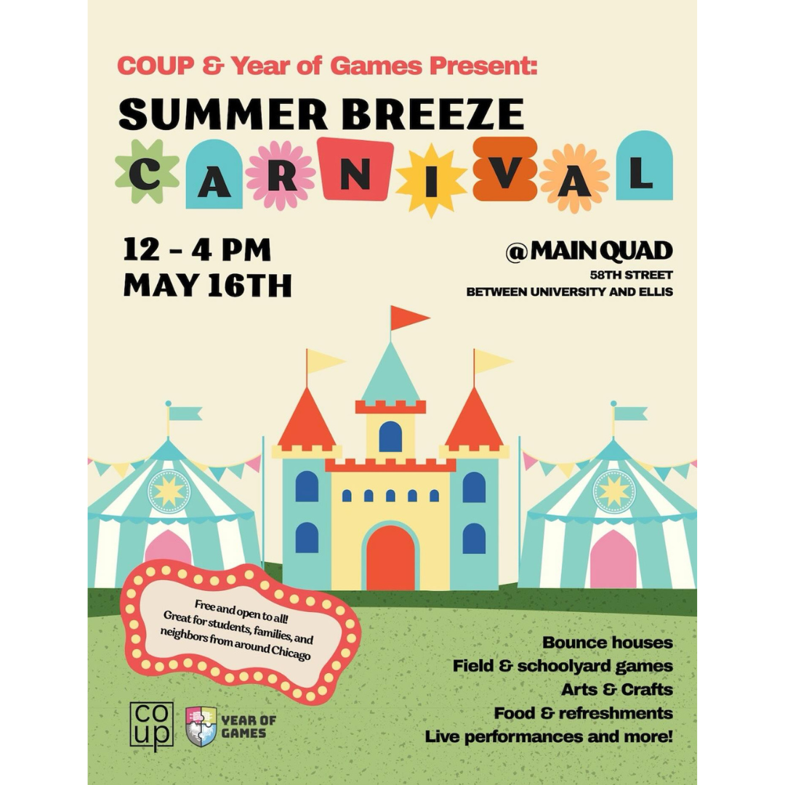
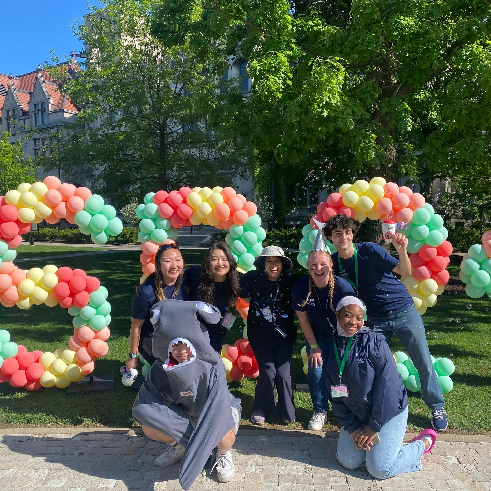

Summer Breeze

Past Summer Breeze Posters
Summer Breeze, held in collaboration with the UChicago Major Activities Board (MAB), is COUP’s last major event of the year!
COUP puts together the Summer Breeze Carnival, which takes place in the morning and afternoon on the Main Quad.
Come to Summer Breeze for free food from food trucks, live music, and attractions such as a variety of bouncy castles!
For information on the concert aspect of Summer Breeze, which takes place in the evening, please visit UChicago MAB.

Past Summer Breeze Photos